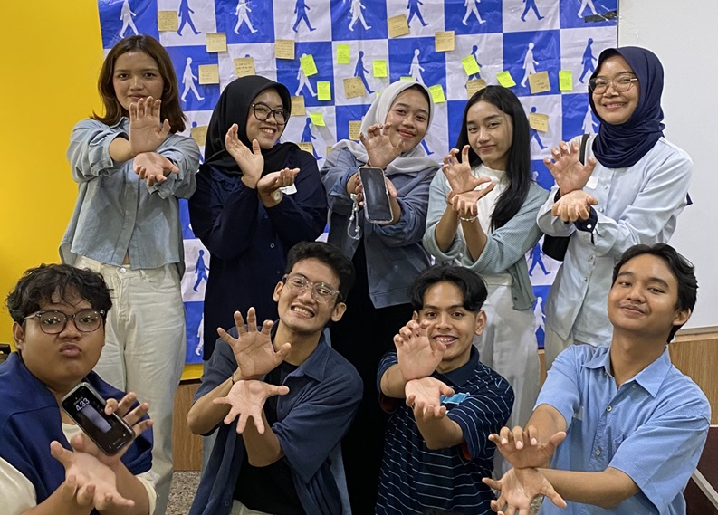

Green Circle adalah komunitas aksi lingkungan berbasis kolaborasi yang berfokus pada edukasi, gerakan sukarela, dan inovasi berkelanjutan. Kami percaya bahwa perubahan besar dimulai dari komunitas yang peduli, bergerak, dan saling menguatkan untuk bumi yang lebih hijau.
Sustainable Development Goals

Bertujuan untuk mengambil tindakan segera dan mendesak untuk memerangi perubahan iklim dan dampaknya.

Bertujuan untuk melestarikan dan memanfaatkan samudra, laut, dan sumber daya kelautan secara berkelanjutan.

Bertujuan melindungi, merestorasi, dan meningkatkan pemanfaatan berkelanjutan ekosistem daratan...

Program relawan terbuka untuk masyarakat yang ingin terlibat langsung dalam aksi lingkungan...

Program intensif selama beberapa hari yang membekali peserta dengan pemahaman mendalam tentang SDGs...

Layanan bank sampah komunitas yang mengedukasi masyarakat dalam memilah, mengelola, dan menukar sampah...

Program kemitraan bersama sekolah, kampus, komunitas lokal, dan brand yang ingin menjalankan proyek...

Yazid Nugraha - Founder Green Circle

Nadine Ariesta

Zainab Feizia